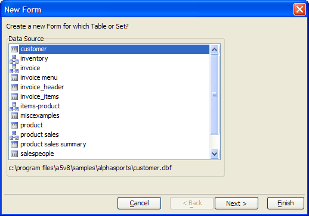

Genies
A Genie is a series of dialog boxes that guide you through performing a task. For example in the Control Panel, if you select the New button while on the Forms tab, the New Form genie appears to help you create a new form.

Creating a New Form with the Genie
After you have supplied the information prompted for in the dialog, the genie continues on to another dialog or is complete. In the example above, the genie prompts you to select a table or set that will be the data source for the Form. After making a selection and clicking Next, another dialog appears that lets you select with to start with:
a blank form
the Default Form, which contains all of the fields in the Table or Set
a custom form, containing only the fields that you select
The genie prompts you for additional information, and continues until it completes the task of creating a new Form. Alpha Five has a variety of Genies that can help automate tasks from simple form creation to highly complex, data-driven operations.
See Also
ADO Record Set Genie, ADO/ODBC Form Genie, Button Genie, Duplicate Records Genie, New Browse Genie, New Form Genie, Operation Genies, Query Genie, Static Text Genie, Xbasic Script Genie